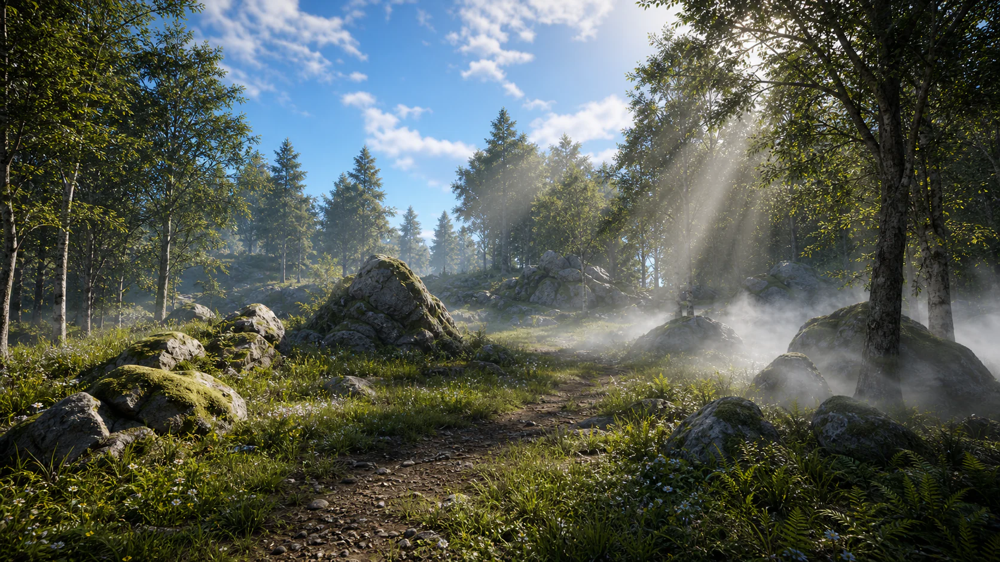

5주차 3교시 — 실습: 자연환경 씬 제작 (학생용)
관련 문서
| 관계 | 문서 |
|---|---|
| 강의 계획서 | 강의계획서: Game Engine II |
| 강의 아웃라인 | 5주차 아웃라인: 환경 라이팅과 에셋 배치 |
| 1교시 핸드아웃 | 5주차 1교시: 환경 라이팅 시스템 |
| 2교시 핸드아웃 | 5주차 2교시: Fab 에셋과 레벨 인스턴스 |
- 환경 라이팅, Fab 에셋, 레벨 인스턴스를 통합해 자연환경 씬을 제작할 수 있다
- 주요 에셋의 콜리전을 확인하고 필요할 때 수정할 수 있다
- 폴리지와 스크린샷 촬영까지 포함해 실습 결과물을 마무리할 수 있다
실습 과제
빈 레벨에서 시작하여 환경 라이팅을 구축하고, Quixel 에셋으로 자연환경 씬을 완성합니다.
완성 목표:
- 하늘: 원하는 시간대의 분위기 + Volumetric Cloud로 구름
- 빛: 볼류메트릭 포그의 God Ray가 나무 사이로 비침
- 지면: Quixel 에셋들이 레벨 인스턴스로 묶여 여러 곳에 배치
- 풀: 폴리지로 자연스러운 지면
- 선택 확장: 바위 근처에 Local Fog Volume으로 국소 안개 효과

기본 완성 기준 — 7가지:
| # | 조건 | 확인 |
|---|---|---|
| 1 | 환경 라이팅 5개 요소 구축 (Env. Light Mixer 활용) | □ |
| 2 | Quixel 에셋으로 환경 배치 | □ |
| 3 | 레벨 인스턴스 최소 2개 변형 생성 | □ |
| 4 | 주요 바위 에셋 콜리전 확인 | □ |
| 5 | 폴리지(풀) 배치로 자연스러운 지면 연출 | □ |
| 6 | Outliner 폴더 정리 + 프로젝트 저장 | □ |
| 7 | High Resolution Screenshot으로 결과물 캡처 | □ |
수업 시간 안에 가능한 범위까지 완성하고 결과물을 확인하세요. 이 프로젝트가 실습 2 과제로 이어집니다. Ctrl+S로 저장해 두세요.
타임라인
| 단계 | 시간 | 누적 |
|---|---|---|
| 단계 1: 레벨 준비 | 3분 | 0:00~0:03 |
| 단계 2: 환경 라이팅 구축 | 10분 | 0:03~0:13 |
| 단계 3: 에셋 배치 + 레벨 인스턴스 | 15분 | 0:13~0:28 |
| 단계 4: 콜리전 확인 | 5분 | 0:28~0:33 |
| 단계 5: 폴리지 + 마무리 | 9분 | 0:33~0:42 |
| 여유 | 3분 | 0:42~0:45 |
단계 1: 레벨 준비
2교시에서 받아둔 에셋을 활용합니다. 새 레벨을 만들고 바닥을 깔아주세요.
1-1. 새 레벨 생성 + 바닥
1. File > New Level > Basic 선택
→ 기본 바닥과 하늘이 있는 레벨이 열립니다.
2. Outliner에서 기존 Floor 액터들을 모두 선택 → Delete
→ 검색창에 "floor" → Ctrl+A → Delete
→ 기본 Floor는 폴리지가 활성화 안 되는 이슈가 있습니다.
3. Place Actors (Shift+1) > Shapes > Cube를 뷰포트에 드래그
→ Location: 0, 0, 0 (우클릭 > Reset)
→ Scale: 20, 20, 1
4. 바닥 머테리얼 적용:
→ Fab에서 받아둔 바닥 머테리얼을 Cube 위에 드래그 앤 드롭
5. 레벨 저장:
→ Ctrl+Shift+S → Content > Lectures > 5Weeks
→ 이름: "Week05_Practice"
2교시에서 받은 Nordic Forest 에셋이 프로젝트에 그대로 있으면 새로 받을 필요 없습니다. Content > Fab > Megascans > 3D에서 확인하세요.
힌트: Fab 에셋이 없어요
2교시에서 받아둔 에셋이 있으면 그걸 사용하세요. 옆 학생과 프로젝트 파일을 공유할 수도 있어요. 수업용 백업 파일을 활용하세요.
단계 2: 환경 라이팅 구축
1교시에서 배운 방법을 직접 적용합니다. 마지막에 Local Fog Volume도 배치해봅니다.
1. 기존 라이팅 삭제:
→ Outliner 검색창에 "light" → Ctrl+A → Delete
→ "fog" 검색 → Delete
→ "sky" 검색 → Delete
→ "cloud" 검색 → Delete
→ 뷰포트가 암흑이 됩니다.
2. Env. Light Mixer 열기:
→ 상단 메뉴 [Window] > [Env. Light Mixer]
3. 5개 액터 생성:
→ [Create Sky Light] 클릭
→ [Create Directional Light] 클릭
→ [Create Sky Atmosphere] 클릭
→ [Create Volumetric Cloud] 클릭
→ [Create Height Fog] 클릭
4. SkyLight 주요 설정:
→ Outliner에서 SkyLight 선택 → Details 패널
→ Mobility: Movable
→ Real Time Capture: 체크
5. 분위기 설정:
→ Directional Light 선택 → Ctrl+L로 회전하여 원하는 시간대 설정
→ Exponential Height Fog 선택 → Volumetric Fog 체크
→ Fog Density 조절 (0.02~0.05 정도, 너무 높으면 구름이 안 보여요)
6. Outliner 정리:
→ 폴더 생성 (+) → 이름: "Lightings"
→ 5개 라이팅 액터를 Lightings 폴더로 드래그
7. Local Fog Volume 배치 (선택 확장):
→ Place Actors에서 "Local Fog" 검색 → 뷰포트에 드래그
→ 바위 뒤나 나무 사이에 배치
→ Scale을 조절하여 국소적인 안개 효과 연출
힌트 1: Env. Light Mixer를 못 찾겠어요
상단 메뉴바에서 [Window] 클릭 > 드롭다운을 아래로 쭉 스크롤 > [Env. Light Mixer]가 있습니다. 클릭하면 별도 창이 열려요.
힌트 2: 노을 분위기를 만들고 싶어요
- Directional Light 선택
- Ctrl+L을 누른 채로 마우스를 좌우로 움직여보세요
- 뷰포트를 먼저 클릭해서 포커스를 줘야 합니다!
- 빛이 수평선 근처에 오면 노을이 됩니다
- Fog 색상도 노을에 맞춰 따뜻한 색으로 변경하면 더 좋아요:
- Exponential Height Fog 선택
- Details에서 “inscattering” 검색
- Fog Inscattering Color를 주황빛으로 변경
힌트 3: SkyLight 설정을 어디서 하나요?
- Outliner에서 [SkyLight] 클릭하여 선택
- 오른쪽 Details 패널에서:
- Transform 근처에 [Mobility] 항목 → [Movable] 선택
- 아래로 스크롤하여 Light 섹션
- [Real Time Capture] 체크박스 체크
- 못 찾겠으면: Details 검색창에 “real time” 타이핑
단계 3: 에셋 배치 + 레벨 인스턴스 생성
2교시에서 본 과정을 직접 수행합니다. 본인만의 변형 2개 이상을 만드세요.
3-1. 에셋 확인 및 정렬
1. Content Browser에서 다운로드한 에셋 폴더 찾기:
→ Content > Fab > Megascans > 3D > [에셋별 폴더]
2. 필터링으로 Static Mesh만 보기:
→ Content Browser 좌상단 필터 아이콘(깔때기) 클릭
→ [Static Mesh] 선택
3. 에셋들을 뷰포트 바닥에 전부 드래그하여 나열:
→ 어떤 에셋이 있는지 한눈에 확인
4. Outliner에서 [Museums] 폴더 생성 → 나열한 에셋을 모두 넣기
5. Museums 에셋 전체 선택 → Details 검색 "hidden in game"
→ [Actor Hidden In Game] 체크
→ G키로 게임 뷰 확인 — 안 보이면 정상
3-2. 레벨 인스턴스 변형 만들기
완성 기준:
| # | 조건 |
|---|---|
| 1 | Museums에서 에셋을 골라 느낌 있게 배치 |
| 2 | 배치한 에셋 선택 → RMB > Level > Create Packed Level Actor |
| 3 | Hidden In Game 해제 + Compile |
| 4 | 최소 2개 변형 생성 (다른 에셋 조합) |
변형 1 만들기:
1. Museums에서 에셋 5~6개를 골라 뷰포트에 새로 배치하세요.
Museums 폴더의 에셋을 직접 쓰는 게 아니라,
같은 에셋을 Content Browser에서 새로 드래그하여 배치!
→ 큰 바위를 중심에, 작은 바위를 주변에
→ 회전(E)과 스케일(R)을 바꿔가며 자연스럽게
2. Outliner에서 방금 배치한 에셋들을 선택하세요.
Museums 폴더 안의 에셋이 아닙니다!
3. 선택한 상태에서 RMB(우클릭)
→ [Level] > [Create Packed Level Actor]
Create Level Instance가 아닙니다!
4. Pivot Type: [Center Min Z] 선택 → 확인 버튼 클릭
5. 레벨 저장:
→ 경로: Content > Lectures > 5Weeks
→ 이름: LV_Var01
6. 블루프린트 저장:
→ 같은 경로
→ 이름: BPP_LV_Var01
7. Hidden In Game 해제:
→ Content Browser에서 BPP_LV_Var01 더블클릭
→ 좌측 Components에서 메쉬 전체 선택 (Ctrl+A)
→ 우측 Details 검색 "hidden in game" → 체크 해제
→ 상단 [Compile] 버튼 클릭
→ Compile 옆 [Save]도 클릭
변형 2 만들기:
8. 다른 에셋 조합으로 배치 → 같은 과정 반복
→ LV_Var02, BPP_LV_Var02로 저장
→ Hidden In Game 해제 + Compile
배치:
9. Content Browser에서 BPP_LV_Var01, Var02를 뷰포트에 드래그
→ 회전(E)/스케일(R)을 바꿔가며 여러 곳에 배치
→ Ctrl+D로 복제도 가능
→ 같은 BPP를 여러 개 배치하되 회전/스케일을 다르게!
Hidden In Game을 해제한 후 상단의 Compile 버튼(초록색 체크 아이콘)을 클릭해 변경사항을 적용합니다. Compile하지 않으면 변경사항이 반영되지 않습니다.
힌트 1: Create Packed Level Actor가 안 보여요
- 먼저 배치한 메쉬들을 Outliner에서 선택했는지 확인
- Museums 폴더의 에셋이 아니라, 뷰포트에 새로 배치한 에셋!
- 선택한 상태에서 RMB(우클릭)
- ACTOR OPTIONS 섹션에서 [Level] 항목을 찾으세요
- 마우스를 올리면 서브메뉴가 나타납니다
- [Create Packed Level Actor] 클릭
힌트 2: 레벨 인스턴스가 게임에서 안 보여요 (G키 눌렀을 때)
원인: Hidden In Game이 체크된 상태로 만들어져서 그래요.
해결:
- BPP_LV_Var01을 더블클릭하여 블루프린트 에디터 열기
- 좌측 Components에서 메쉬 전체 선택 (Ctrl+A)
- 우측 Details 검색창에 “hidden” 타이핑
- [Hidden In Game] 체크 해제
- 상단 [Compile] 버튼 클릭
- ‘Compile Successful’ 메시지가 뜨면 성공
- [Save] 클릭
힌트 3: 레벨 인스턴스를 수정하고 싶어요
- 뷰포트에서 레벨 인스턴스 선택
- Details 패널의 Level Instance 섹션에서 [Edit] 클릭
- Level Instance Edit 모드에서 내부 오브젝트 이동/삭제/추가
- 하단의 [Save] 클릭으로 저장
- 같은 BPP를 쓰는 모든 인스턴스에 반영됩니다!
단계 4: 콜리전 확인
주요 바위 에셋 1~2개는 콜리전을 확인합니다. 캐릭터가 바위를 뚫고 지나가지 않는지 확인하는 과정입니다.
1. Content Browser에서 사용할 바위 Static Mesh를 더블클릭
2. Static Mesh Editor 상단 메뉴에서 Show > Complex Collision 체크
3. 초록색 와이어프레임이 보이는지 확인
4. 콜리전이 없거나 너무 단순하면:
→ Collision > Auto Convex Collision
→ 기본값으로 Apply
5. Details > Collision > Collision Presets가 BlockAll인지 확인
6. Play(Alt+P)로 걸어다니며 바위를 뚫고 지나가지 않는지 확인단계 5: 폴리지 + 마무리
4-1. 폴리지 모드로 풀 배치
1. 상단 모드 바에서 [Foliage] 아이콘 클릭
→ 또는 단축키 Shift+3
2. Foliage 패널 왼쪽 하단의 [+ Foliage Type] 버튼 클릭
→ Content Browser에서 풀/식물 에셋(Static Mesh)을 드래그하여 등록
→ Fab에서 받은 Tundra Grass 등 활용
→ 여러 종류를 등록하면 자연스러운 혼합 가능
3. Paint 모드 선택 (파란 붓 아이콘)
4. Painting 설정 (Foliage 패널 우측):
→ Density: 적절히 조절 (너무 빽빽하면 성능 저하)
→ Radius: 배치 범위 (넓게 칠하려면 올리기)
→ Scale: Min 0.8 ~ Max 1.2 정도 (크기 변화를 주면 자연스러움)
5. 바닥(Cube) 위에 마우스 드래그하여 풀 칠하기
→ 바위 주변에 집중적으로 칠하면 자연스러워요
→ 나무는 너무 많으면 무거우니까 적당히!
6. 끝나면 상단 모드에서 [Select Mode] (Shift+1)로 돌아오세요.힌트 1: 폴리지 에셋이 등록이 안 돼요
폴리지에 등록할 수 있는 건 Static Mesh만 가능합니다. Content Browser에서 Static Mesh 필터를 켜고 풀이나 식물 에셋을 찾아서 Foliage 패널로 드래그하세요. Material이나 Texture는 등록 안 됩니다!
힌트 2: 풀이 너무 빽빽해요 / 너무 적어요
Density를 조절하세요:
- 너무 빽빽하면: Density 값을 낮추세요
- 너무 적으면: Density 값을 높이세요
- 이미 칠한 풀을 지우려면: Shift+드래그 (지우기 모드)
4-2. Outliner 정리
| 폴더 | 내용 |
|---|---|
| Lightings/ | DirectionalLight, SkyLight, SkyAtmosphere, ExponentialHeightFog, VolumetricCloud |
| Museums/ | 에셋 확인용, Hidden In Game 체크됨 |
| LevelInstances/ (선택) | BPP_LV_Var01, BPP_LV_Var01_복제1, BPP_LV_Var02 등 |
폴더가 없으면: Outliner 상단 (+) > Create Folder로 만들어 정리합니다.
4-3. High Resolution Screenshot 촬영
과제 제출용 스크린샷을 찍어두세요.
1. 뷰포트에서 마음에 드는 앵글을 잡으세요.
2. 뷰포트 좌상단 햄버거 메뉴(三) 클릭 → [High Resolution Screenshot] 선택
3. 해상도 배율을 2로 설정 → [Capture] 클릭
4. 또는 콘솔 명령어 사용:
→ ` 키(백틱)로 콘솔 열기
→ HighResShot 2 입력 후 Enter (2배 해상도)
5. 저장된 스크린샷 위치: 프로젝트 폴더 > Saved > Screenshots4-4. 최종 확인 + 저장
1. 전체 씬을 둘러보세요:
→ RMB + WASD로 카메라 이동
→ 하늘, 빛, 안개, 바위, 풀이 모두 있는지 확인
2. G키로 게임 뷰 확인:
→ Museums 에셋은 안 보이고, 환경만 보이면 정상
3. Ctrl+S로 저장
→ 저장하지 않으면 작업 내용이 사라질 수 있습니다
4. 완성 씬을 확인하고 제출용 스크린샷을 챙기세요.확장 과제 (일찍 완료한 학생용)
확장 과제 1 — 레벨 인스턴스 변형 추가:
2개만 만들었다면, 4~6개까지 변형을 늘려보세요. 변형들을 섞어서 배치하면 더 자연스러운 환경이 됩니다. 큰 바위 군집 + 작은 바위 군집 + 그루터기 등 다양하게 조합합니다.
확장 과제 2 — 분위기 연출:
- Directional Light를 Ctrl+L로 회전하여 다른 시간대를 만들어보세요.
- Fog Density와 Fog Color를 시간대에 맞춰 조절합니다.
- Point Light를 추가하여 볼류메트릭 포그에서 빛 산란 효과를 연출합니다.
- Point Light의 Volumetric Scattering Intensity를 3.0 이상으로!
확장 과제 3 — SkyAtmosphere 커스터마이징:
- 2교시에서 배운 Absorption, Rayleigh Scattering 색상을 바꿔보세요.
- 외계 행성 느낌이나 포스트 아포칼립스 분위기를 만들어보세요.
- SkyAtmosphere 선택 → Details 검색 “absorption” 또는 “rayleigh”
확장 과제 4 — 머테리얼 인스턴스 조작:
- 바닥 머테리얼 인스턴스를 더블클릭하여 열기.
- 3주차에서 배운 것처럼 Tiling, Saturation, Brightness 값 조정.
- 바위 에셋과 어울리는 바닥 색감으로 통일감 만들기.
핵심 요약
- 환경 라이팅: Env. Light Mixer로 5개 요소를 한 번에 생성하고, SkyLight는 Movable + Real Time Capture로 설정합니다. Local Fog Volume으로 국소 안개 효과도 연출할 수 있습니다.
- 레벨 인스턴스: 에셋 배치를 패키지로 묶어 재사용합니다. Hidden In Game 해제 후 Compile을 클릭합니다.
- 콜리전: 주요 바위 에셋의 물리 경계를 확인하고 Play 모드에서 검증합니다.
- 폴리지: Foliage 모드에서 풀을 Paint하여 자연스러운 지면을 만듭니다.
- 스크린샷: High Resolution Screenshot으로 결과물을 캡처합니다.
-
정리: Outliner 폴더 정리와
Ctrl+S저장은 마지막에 수행합니다.